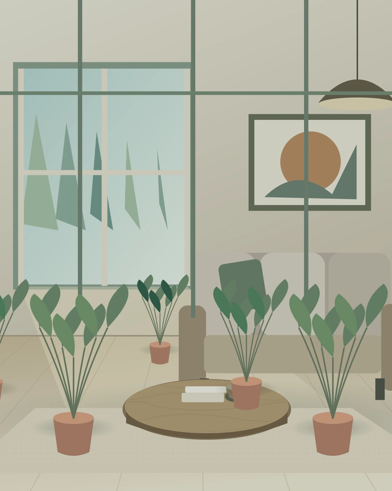

Rute tenang
Sebagian pengunjung membutuhkan lingkungan yang lebih tenang. Rute konsep ini menekankan pilihan berhenti dan menghindari keharusan mengikuti urutan.
CATATAN KEBUN / 15

Mulai mengamati
Pilih lebih sedikit zona.
Berikan waktu
Tentukan tempat berkumpul bila rombongan terpisah.
Simpan pertanyaan
Minta informasi kondisi sensorik pada pengelola lokasi nyata.